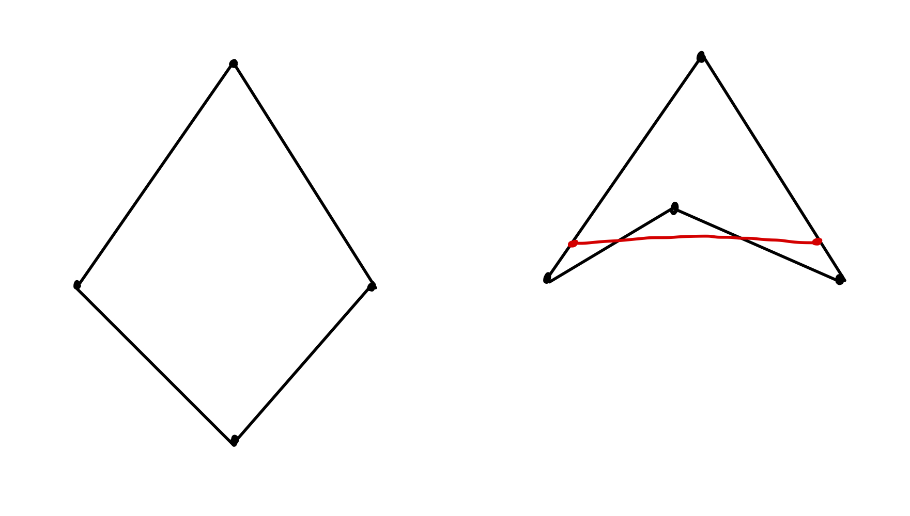
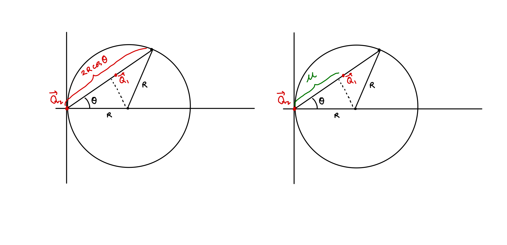

\[\newcommand{\kbar}{\mathchar'26\mkern-9mu k} \newcommand{\ebar}{\mathchar'26\mkern-9mu \theta_0} \newcommand{\ebarblue}{\mathchar'26\mkern-9mu \textcolor{blue}{\theta_0}} \DeclareMathOperator*{\lcm}{lcm} \DeclareMathOperator*{\R}{\mathbb{R}} \DeclareMathOperator*{\N}{\mathbb{N}} \DeclareMathOperator*{\Q}{\mathbb{Q}} \DeclareMathOperator*{\Var}{\textnormal{Var}} \DeclareMathOperator*{\Area}{\textnormal{Area}} \DeclareMathOperator*{\Cov}{\textnormal{Cov}} \DeclareMathOperator*{\Conv}{\textnormal{Conv}} \DeclareMathOperator*{\Z}{\mathbb{Z}} \DeclareMathOperator*{\Zp}{{\mathbb{Z}}^+} \DeclareMathOperator*{\E}{\mathbb{E}} \DeclareMathOperator*{\C}{\mathbb{C}} \DeclareMathOperator*{\A}{\mathbb{A}} \DeclareMathOperator*{\expp}{\text{exp}} \DeclareMathOperator*{\lt}{L_{\bullet}} \DeclareMathOperator*{\roc}{\rotatebox[origin=c]{180}{c}} \DeclareMathOperator*{\rok}{\rotatebox[origin=c]{180}{$k$}} \DeclareMathOperator*{\boldv}{\boldsymbol{v}} \DeclareMathOperator*{\hbarbrown}{\textcolor{brown}{\hbar}} \DeclareMathOperator*{\e}{\textcolor{purple}{\theta_0_1}} \DeclareMathOperator*{\ee}{\textcolor{purple}{\theta_0_2}} \DeclareMathOperator*{\ered}{\textcolor{red}{--\theta_0_1 \theta_0_2}} \DeclareMathOperator*{\eblue}{\textcolor{blue}{\theta_0_1 + \theta_0_2}} \DeclareMathOperator*{\eebrown}{\textcolor{brown}{-- \theta_0}} \DeclareMathOperator*{\ebrown}{\textcolor{brown}{\theta_0}} \DeclareMathOperator*{\eebrownlevel}{\textcolor{brown}{\theta_0^2}} \DeclareMathOperator*{\tealN}{\textit{\textcolor{teal}{N}}} \DeclareMathOperator*{\bluenoise}{\boldsymbol{\Psi}_{\mathbb{T}}} \DeclareMathOperator*{\pinknoise}{\boldsymbol{\Psi}_{\mathbb{T}}} \DeclareMathOperator*{\uniform}{\boldsymbol{\rho}_{\star | \mathbb{T}}} \DeclareMathOperator*{\vcurrent}{\widehat{\textit{\textbf{v}}}} \newcommand{\dbar}{\mathchar'26\mkern-9mu \theta_0}\]
Introduction
James Joseph Sylvester posed the following problem in the Educational times of \(1864\):
Problem: Show that the chance of four points forming the apices of a reentrant quadrilateral is \(\frac{1}{4}\) if they be taken at random in an indefinite plane, but \(\frac{1}{4}+e^2 + x^2\), where \(e\) is a finite constant and \(x\) is a variable quantity, if they be limited by an area of any magnitude and of any form.

In simple terms, part (1) of problem asks us to show that the probability of the event that four points sampled uniformly randomly on the infinite plane forms a concave quadrilateral is \(\frac{1}{4}\). Part (2) asks for the probability in any region of bounded area. The problem, posed in the late nineteenth century, predates the invention of measure theoretic formulation of probability. As a result, the fact that ‘points taken at random in an indefinite plane’ is undefined evaded even the great J.J. Sylvester.
Definition: A set of point \(K \subset \R^d\) is convex if it contains the line segments connecting any pair of points within \(K\). The convex hull of set \(K\), denoted by \(\Conv(K)\) is the unique minimal convex set that contains \(K\).
On a later issue of the Education times, Sylvester noted, “this problem does not admit of a determinate solution” and modified the question. Which, in modern terminology, translates to:
Problem: Find the probability of the event where the convex hull of four randomly distributed points on any region \(K\) of the plane is a triangle.
In this post, I investigate the problem when \(K\) is a disk of radius \(r\), \(D_r\). At first, I will attempt the problem with techniques from my probability class and, hopefully, demonstrate that we need tools outside traditional probability theory to solve the problem reasonably.
Calculation: Brute Force
Let \(D_r\) be a disk of radius \(r>0\). Sample four random points from the disk \(D_r\): \[M,N,P,Q \sim \textnormal{Unif}(D_r)\] We have to find the probability of the event where one of the four points is contained in the triangle formed by the remaining three. The event is given by the union of four similar events: \[E = [M \in \Delta(N,Q,P)] \vee [N \in \Delta(M,P,Q)] \vee [Q \in \Delta(M,N,P)] \vee [P \in \Delta(M,N,Q)]\] These events are mutually exclusive. The proof follows from the fact that only one point can be contained inside the triangle formed by the rest at any given time. It follows from symmetry that all the events have equal probability. As a result, for simplicity, we can write: \[ Pr[E] = 4Pr[Q \in \Delta(M,N,P)] \]
Now note that computing \(Pr[Q \in \Delta(M,N,P)]\) is the same as computing the ratio of \(\Area \Delta(M,N,P)\) to \(\Area(D_r)\). This follows from the following observation: \(Q\) is either contained in \(\Delta(M,N,P)\) or contained in its complement \(D_r - \Delta(M,N,P)\). As a result, we get: \[ Pr[E] = \frac{4\E[\Area(M,N,P)]}{\Area(D_r)}\]
We know \(\Area(D_r) = \pi r^2\). Then the problem boils down to finding the expected area of \(\Area\Delta (M,N,P) = \Area(M,N,P)\). The integral we have to evaluate: \[ \E[\Area(M,N,P)] = \int_{-\infty}^{\infty} \int_{-\infty}^{\infty} \int_{-\infty}^{\infty} \Area(m,n,p) ~f_{M, N, P}(m, n, p) ~dm~dn~dp \]
This is not as bad as it looks when you assume that \(r = 1\). Because we’ve assumed \[M,N,P \sim \textnormal{Unif}(D_1)\]
We can define the joint probability density function to be: \[f_{M,N,P}(m,n,p) = \begin{cases} \frac{1}{\pi^3} &\text{ when } (m,n,p) \in D_1\\ 0 &\text{ when } (m,n,p) \not \in D_1 \end{cases}\]
Now let \[ m = (x_1,y_1), ~n = (x_2, y_2), ~p = (x_3,y_3) \]
We can then use the shoelace formula to compute: \[\begin{align*} \Area(m,n,p) &=\frac{1}{2} \left| \det \begin{bmatrix} 1&1&1\\ x_1&x_2&x_3\\ y_1&y_2&y_3 \end{bmatrix} \right| \end{align*}\]
Now, assume that \(D_1\) is a disk of radius \(1\) centered at the origin, so that we can use polar coordinates: \[ m = (x_1,y_1) = (\sqrt{r_1}\cos \theta_1, \sqrt{r_1}\sin \theta_1) \] \[ n = (x_2,y_2) = (\sqrt{r_2}\cos \theta_2, \sqrt{r_2} \sin \theta_2) \] \[p = (x_3,y_3) = (\sqrt{r_3} \cos \theta_3, \sqrt{r_3} \sin \theta_3)\]
Then: \[\begin{align*} \Area(m,n,p) &= \frac{1}{2} \left| \det \begin{bmatrix} 1&1&1\\ \sqrt{r_1} \cos \theta_1&\sqrt{r_2} \cos \theta_2&\sqrt{r_3} \cos \theta_3\\ \sqrt{r_1} \sin \theta_1&\sqrt{r_2} \sin \theta_2&\sqrt{r_3} \sin \theta_3 \end{bmatrix} \right| \end{align*}\]
Recall the trig identity: \[ \sin(\alpha-\beta) = \sin \alpha \cos \beta - \cos \alpha sin \beta \]
We can further simplify:
\[\begin{align*} \Area(m,n,p) &= \frac{1}{2}\left| \sqrt{r_1r_3 }\sin(\theta_1 - \theta_3) + \sqrt{r_1r_2} \sin(\theta_2 - \theta_1) + \sqrt{r_2r_3} \sin(\theta_3 - \theta_2) \right| \end{align*}\]
We can further specify what the joint pdf looks like: \[\begin{align*} &f_{M,N,P}(r_1,r_2, r_3, \theta_1, \theta_2, \theta_3)\\ &= \begin{cases} \frac{1}{\pi^3} &\text{ when } (\sqrt{r_1},\sqrt{r_2}, \sqrt{r_3}) \in [0,1]^3 \text{ and } (\theta_1, \theta_2, \theta_3) \in [0,2\pi]^3 \\ 0 &\text{ otherwise } \end{cases} \end{align*}\] Now, let’s write the full integral: \[\begin{align*} &\E[\Area(M,N,P)] \\ &= \frac{1}{\pi^3} \int_{[0,2\pi]} \int_{[0,2\pi]} \int_{[0,2\pi]} \int_{[0,1]} \int_{[0,1]} \int_{[0,1]} \Area(m,n,p) ~dr_1 ~dr_2 ~dr_3 ~d \theta_1~d \theta_2 ~d \theta_3\\ &= \frac{1}{\pi^3} \int_{[0,2\pi]^3} \int_{[0,1]^3} \Area(r_1,r_2, r_3, \theta_1, \theta_2, \theta_3) ~dr_1 ~dr_2 ~dr_3 ~d \theta_1~d \theta_2 ~d \theta_3\\ &= \frac{1}{\pi^3} \int_{[0,2\pi]^3 \times [0,1]^3} \frac{1}{2}\left| \sqrt{r_1r_3} \sin(\theta_1 - \theta_3) + \sqrt{r_1r_2} \sin(\theta_2 - \theta_1) + \sqrt{r_2r_3} \sin(\theta_3 - \theta_2) \right| ~dr_1 \cdots\end{align*}\]
Evaluating this integral simply by adjusting the bounds of integration is going to be a nightmare. As a result, we need an important tool called Crofton's Formula, named after Morgan Crofton. I consider it to be a sin to throw formulas around without motivating them, so let’s first see where the formula comes from.
Crofton’s Formula
Let’s take things down by one notch. Instead of computing the area of a convex hull of three points in the unit disk, let’s compute the area of the convex hull of two points. That is, we want to find the expected length of a line segment drawn from a disk of radius \(1\). Let’s simplify the problem by considering a disk of radius \(r\). Let \(\vec{Q_1} = (x_1, y_1)\) and \(\vec{Q_2} = (x_2, y_2)\) be points sampled from a uniform distribution on the domain \(D_r = B_r(0,0)\), or a disk of radius \(r\): \[ \vec{Q_1}, \vec{Q_2} \sim \textnormal{Unif}(D_r)\]
Take the convex hull of \(\vec{Q_1}\) and \(\vec{Q_1}\): the line connecting points \((x_1, y_1)\) and \((x_2, y_2)\): \[ \Conv(\vec{Q_1}, \vec{Q_2}) = \vec{Q_1}(1-t) + \vec{Q_2}t ~\text{ for } t \in [0,1] \]
Our aim is to find the expected area of \(\Conv(\vec{Q_1}, \vec{Q_2})\) or the length in this case:
\[\mathbb{E}_{r}[\Area(\Conv(\vec{Q_1}, \vec{Q_2}))] =\mathbb{E}_{r} [|\vec{Q_1}- \vec{Q_2}|]\] Consider a new domain \(D_{r+h}\), a disk of radius \(r+h\). Like before, sample points from the domain: \[ \vec{Q_1}, \vec{Q_2} \sim \textnormal{Unif}(D_{r+h}) \] One can ask what is the relationship between the expected areas of points sampled from the domains: \(D_r\) and \(D_{r+h}\).

We first compute the joint probability of the points in the bigger domain, \(D_{r+h}\): \[ P_{r+h}(\vec{Q_1}, \vec{Q_2}) = \begin{cases} \left( \frac{\pi r^2}{\pi (r+h)^2} \right)^2 &\text{ when } \vec{Q_1}, \vec{Q_2} \in D_r\\ \left( \frac{\pi r^2}{\pi (r+h)^2} \right) \left(1- \frac{ \pi r^2}{\pi(r+h)^2} \right) &\text{ when } \vec{Q_1} \in D_{r+h} -D_{r}, ~\vec{Q_2} \in D_r\\ \left( \frac{\pi r^2}{\pi (r+h)^2} \right) \left(1- \frac{ \pi r^2}{\pi(r+h)^2} \right) &\text{ when } \vec{Q_2} \in D_{r+h} -D_{r}, ~\vec{Q_1} \in D_r\\ \left( 1- \frac{ \pi r^2}{\pi(r+h)^2} \right)^2 &\text{ when } \vec{Q_1},\vec{Q_2} \in D_{r+h} -D_{r} \end{cases} \]
Now consider the case when \(\vec{Q_1}, \vec{Q_2} \in D_r\): \[\begin{align*} P_{r+h}(\vec{Q_1}, \vec{Q_2}) &= \left( \frac{\pi r^2}{\pi (r+h)^2} \right)^2\\ &= \left(\frac{r^4}{r^4+ 4r^3h + 6r^2h^2 + 4rh^3+h^4}\right)\\ &= \left( \frac{1}{1+ \frac{4h}{r} + \frac{6h^2}{r^2} + \frac{4h^3}{r^3} + \frac{h^4}{r^4}} \right)\\ &= \left( \frac{1}{1+ 4\frac{h}{r} + 6\frac{h^2}{r^2} + 4\frac{h^3}{r^3} + \frac{h^4}{r^4}} \right)\\ &= \frac{1}{ \left( 1+ 4\frac{h}{r} + 6\frac{h^2}{r^2} + 4\frac{h^3}{r^3} + \frac{h^4}{r^4} \right)} \\ &= \frac{1}{ \left( 1+ \frac{4h}{r} + \frac{6h^2}{r^2} + \frac{4h^3}{r^3} + \frac{h^4}{r^4} \right)} \\ \end{align*}\] From now onwards, assume that \(|h|<< r\). Then we can use the power series expansion to get: \[P_{r+h}(\vec{Q_1}, \vec{Q_2}) = 1- \frac{4h}{r} + o(h) \]
We can similarly compute the probability one of the points is contained inside \(D_r\) and the other in \(D_{r+h}- D_r\): \[\begin{align*} P_{r+h}(\vec{Q_i} \in D_r, \vec{Q_j} \in D_{r+h}- D_r) &=2 \left( \frac{\pi r^2}{\pi (r+h)^2} \right) \left(1- \frac{ \pi r^2}{\pi(r+h)^2} \right) \\ &=2 \left( \frac{ r^2}{ (r+h)^2} \right) \left(1- \frac{ r^2}{(r+h)^2} \right) \\ &= 2 \left( \frac{ r^2}{r^2 (1+\frac{h}{r})^2} \right) \left(1- \frac{ r^2}{r^2(1+\frac{h}{r})^2} \right) \\ &= 2 \left( \frac{ 1}{ (1+\frac{h}{r})^2} \right) \left(1- \frac{ 1}{(1+\frac{h}{r})^2} \right) \\ \end{align*}\] Using binomial approximation with \(|\frac{2h}{r}|<<r\) and power series expansion, we get: \[\begin{align*} P_{r+h}(\vec{Q_i} \in D_r, \vec{Q_j} \in D_{r+h}- D_r) &\approx \left( \frac{ 2}{ 1+\frac{2h}{r}} \right) \left(1- \frac{ 1}{1+\frac{2h}{r}} \right)\\ &\approx 2 \left(1- \frac{2h}{r} \right) \cdot \frac{2h}{r} \\ &= \frac{4h}{r} + o(h) \end{align*}\]
Lastly, compute the probability that both the points are in \(D_{r+h}-D_r\): \[\begin{align*} P_{r+h}(\vec{Q_1}, \vec{Q_2} \in D_{r+h}- D_r) &= \left(1- \frac{ \pi r^2}{\pi(r+h)^2} \right)^2 \\ &\approx \left(1- \frac{ 1}{1+\frac{2h}{r}} \right)^2\\ &\approx \left( \frac{2h}{r} \right)^2\\ &= o(h) \end{align*}\]
Now, recall that our original ambition was to compute \[\mathbb{E}_{r}[\Area(\Conv(\vec{Q_1}, \vec{Q_2}))] =\mathbb{E}_{r}[ |\vec{Q_1}- \vec{Q_2}|]\]
Denote \(P_{r+h} = P\). Then, using conditional expectation, one can show that \[\begin{align*} &\mathbb{E}[ |\vec{Q_1}- \vec{Q_2}| \text{ given } \vec{Q_1}, \vec{Q_2} \in D_{r+h}] \\&= P\left(\vec{Q_1}, \vec{Q_2} \in D_{r}\right) \cdot \mathbb{E}[ |\vec{Q_1}- \vec{Q_2}| \text{ given } \vec{Q_1}, \vec{Q_2} \in D_{r}] \\ &+P \left( \vec{Q_1} \in D_{r}, \vec{Q_2} \in D_{r+h} - D_r\right) \cdot 2 \mathbb{E}[ |\vec{Q_1}- \vec{Q_2}| \text{ given } \vec{Q_1} \in D_{r} , \vec{Q_2} \in D_{r+h} - D_{r}] \\ &+ P\left( \vec{Q_1}, \vec{Q_2} \in D_{r+h} - D_{r} \right) \mathbb{E}[ |\vec{Q_1}- \vec{Q_2}| \text{ given } \vec{Q_1}, \vec{Q_2} \in D_{r+h} - D_{r}] \end{align*}\]
This is becoming cumbersome, so let’s take \(\vec{Q_1}, \vec{Q_2}\) to be implicit: \[\begin{align*} &=\mathbb{E}[ \text{ length } | ~ D_{r+h}] \\&= P\left( D_{r}\right) \cdot \mathbb{E}[ \text{ length } | ~ D_{r}] \\ &+2 P \left( D_{r}, D_{r+h} - D_r\right) \cdot \mathbb{E}[ \text{ length } | ~ D_{r} , D_{r+h} - D_{r}] \\ &+ P\left( D_{r+h} - D_{r} \right) \cdot \mathbb{E}[ \text{ length } | ~ D_{r+h} - D_{r}]\\ \end{align*}\]
Take length to be implicit and plug in values from before: \[\begin{align*} \mathbb{E}[ D_{r+h}] &= \left( 1- \frac{4h}{r} \right)\mathbb{E}[ D_{r}] + \frac{4h}{r}~\mathbb{E}[ D_r, \left(D_{r+h} - D_{r}\right)]\\ \mathbb{E}[ D_{r+h}] - \mathbb{E}[ D_{r}] &= \frac{4h}{r} \left( \mathbb{E}[ D_r, \left(D_{r+h} - D_{r}\right)] - \mathbb{E}[ D_{r}] \right)\\ \frac{\mathbb{E}[ D_{r+h}] - \mathbb{E}[ D_{r}]}{h}&= \frac{4}{r} ~\mathbb{E}[ D_r, \left(D_{r+h} - D_{r}\right)] - \frac{4}{r}~ \mathbb{E}[ D_{r}] \end{align*}\] Taking the limit as \(h \to 0\), we get: \[ \mathbb{E}'[D_r] = \frac{4}{r} ~\mathbb{E}[ D_r, \left(D_{r} - D_{r}\right)] - \frac{4}{r}~ \mathbb{E}[ D_{r}] \] We need to be careful about taking the limits on the right hand side. Consider the first term of the summand: \(\mathbb{E}[ \text{ length } | ~ \vec{Q_i} \in D_r, \vec{Q_j} \in D_{r+h} - D_{r}]\). As \(h \to 0\), the domain \(D_{r+h} - D_r\) collapses to \(C_r\), the boundary of the disk \(D_r\). As a result: \[ \lim_{h \to 0} \mathbb{E}[ \text{ length } | ~ \vec{Q_i} \in D_r, \vec{Q_j} \in D_{r+h} - D_{r}] = \mathbb{E}[ \text{ length } | ~ \vec{Q_i} \in D_r, \vec{Q_j} \in C_r]\]
Meaning, limit of the expected length of points exclusively sampled from \(D_r\) and \(D_{r+h} - D_r\) approaches the expected length for when one of the points is sampled from \(D_r\) and the other from its boundary \(C_r\), as \(h \to 0\).
Rewrite to get Crofton’s formula for a convex domain with two randomly sampled points: \[ \mathbb{E}'[\text{ length } | D_{r}] = \frac{4}{r} ~\mathbb{E}[ \text{ length } | D_r, C_r] - \frac{4}{r}~ \mathbb{E}[ \text{ length } | D_{r}] \]
Let’s try to unpack here. The equation says that the rate of change of expected length when both points are sampled from \(D_r\), can be expressed as a sum of two expected lengths: (1) expected length when one point is sampled from the circumference and the other from the interior, and (2) both points are sampled from the interior, weighted by constants dependent on \(r\). We make an important remark here.
Remark
The expected length of the line segment \(\ell(\vec{Q_1}, \vec{Q_2})\), is a function of the radius \(r\): \[ \E[|\vec{Q_1}- \vec{Q_2}|] = \mathbb{E}[ \textnormal{ length } | D_{r}]= kr \] for some constant \(k\).
This follows from simple observation about Euclidean distance. Say two points \(\vec{Q_1},\vec{Q_2}\) sampled from a unit disk \(D_1\) are \(k\)-unit away from each other: \[|\vec{Q_1}- \vec{Q_2}| = k \] If we now enlarge the disk to have radius \(r\), then, for the linearly transformed points \(\vec{Q_1'}, \vec{Q_2'}\) now sampled from the bigger disk, \(D_r\) we have: \[|\vec{Q_1'}- \vec{Q_2'}| =r |\vec{Q_1}- \vec{Q_2}| =kr \] Since expectation is linear, we know \[ \E[|\vec{Q_1'}- \vec{Q_2'}|] = \E[k|\vec{Q_1}- \vec{Q_2}|] = k \E[|\vec{Q_1}- \vec{Q_2}| \]
I mention this because this tell us that rate of change of expected length should be a constant: \[ \mathbb{E}'[ \textnormal{ length } | D_{r}]= k \] This observation simplifies Crofton’s formula into:
\[ kr = \frac{4}{r} ~\mathbb{E}[ \text{ length } | D_r, C_r] - \frac{4}{r}~ kr \]
We have one remaining expected to compute which is relatively simpler: \[\begin{align*} \mathbb{E}[ |\vec{Q_1}- \vec{Q_2}| \textnormal{ given } \vec{Q_1} \in D_r, \vec{Q_2} \in C_r] \end{align*}\]
Note that due to the symmetry of the circumference, we can fix \(\vec{Q_2}\) at the origin: \(\vec{Q_2} = (0,0)\).

Then: \[\begin{align*} \mathbb{E}[ |\vec{Q_1}- \vec{Q_2}| \textnormal{ given } \vec{Q_1} \in D_r, \vec{Q_2} =(0,0)] &= \int_{D_r} \sqrt{x_2^2+ y_2^2} ~f_{\vec{Q_1}} \end{align*}\] Here \(f_{\vec{Q_1}}\) is simply the probability distribution function of \(\vec{Q_1}\) which we know equals the inverse of the area of \(D_r\). \[\begin{align*} \mathbb{E}[ |\vec{Q_1}- \vec{Q_2}| \textnormal{ given } \vec{Q_1} \in D_r, \vec{Q_2} =(0,0)] &= \frac{1}{\Area(D_r)} \int_{D_r} \sqrt{x_2^2+ y_2^2} \end{align*}\] We can parametrize \(\vec{Q_2}\) as a function of \(\mu\) and \(\theta\) where $= $ where \(\theta = [-\frac{\pi}{2}, \frac{\pi}{2}]\). From the picture above, we see that as \(\mu \in [0, 2R\cos(\theta)]\). As a result, we get: \[\begin{align*} \mathbb{E}[ |\vec{Q_1}- \vec{Q_2}| \textnormal{ given } \vec{Q_1} \in D_r, \vec{Q_2} =(0,0)] &= \frac{1}{\pi r^2} \int_{-\pi/2}^{\pi/2} \int_{0}^{2R\cos(\theta)} \mu ~d\mu ~d\theta\\ &= \frac{32r}{9\pi} \end{align*}\] Plugging into Crofton’s formula, we get: \[\begin{align*} kr &= \frac{4}{r} \cdot \frac{32r}{9\pi} - \frac{4}{r}~ kr\\ k&= \frac{128}{45\pi} \end{align*}\]
Recall the remark we made on the last page:
\[ \E[|\vec{Q_1}- \vec{Q_2}|] = \mathbb{E}[ \textnormal{ length } | D_{r}]= kr \]
Setting \(r=1\), we get:
\[ \E[|\vec{Q_1}- \vec{Q_2}|] = \mathbb{E}[ \textnormal{ length } | D_{1}]= k \]
So we have successfully computed the expected length of a line drawn from the unit disk at random.
Conclusion
The nice thing about Crofton’s formula is that it generalizes for any convex set \(K\), and \(n\) uniformly, randomly chosen points from \(K\). We can then use a similar approach to find the expected area of a triangle whose vertices are sampled uniformly, randomly from the unit disk: \[\begin{align*} \E[\Area(\Delta)\textnormal{ given that } \Delta \in D_1] &= \frac{35}{48\pi} \end{align*}\] The computation becomes slightly involved so I will leave it as an exercise for the reader. As a result, we know that the probability of the event where the convex hull of four randomly distributed points on a unit disk is a triangle, denoted by \(E\) is: \[ P(E) = \frac{4\E[\Area(\Delta)]}{\pi} = \frac{35}{12\pi^2} \] I like the result because its considered to be one of the earliest works in the world of geometric probability. Nice extensions to the problem can be found in the references below.